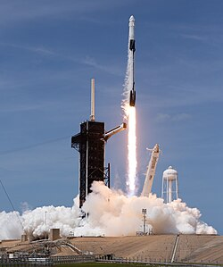
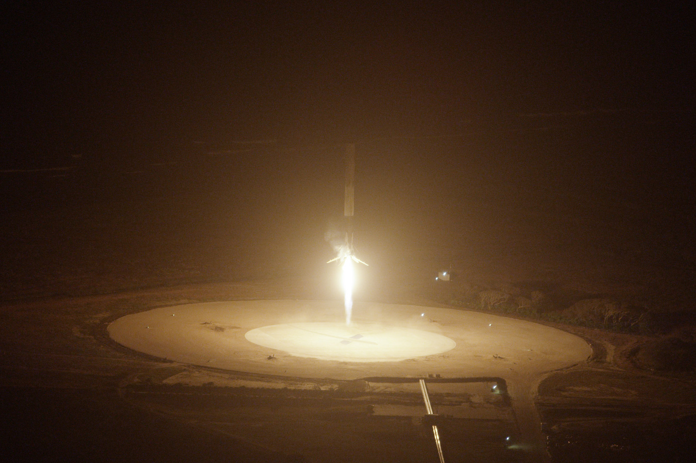
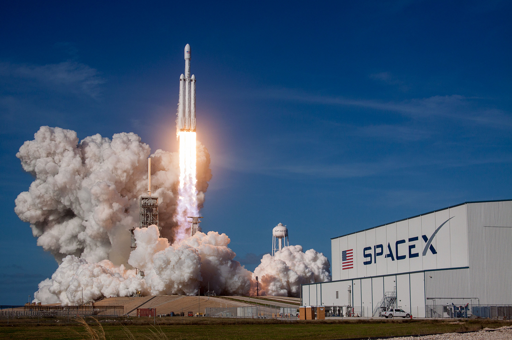
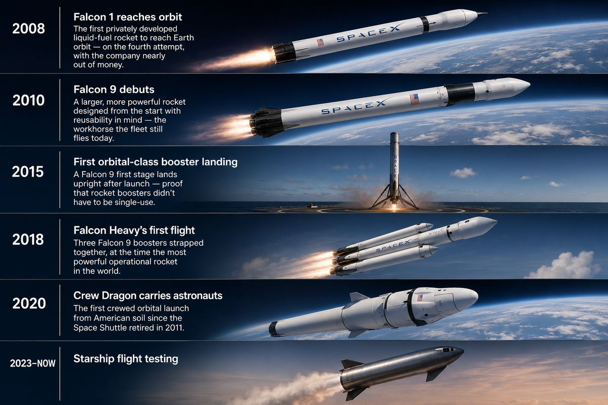
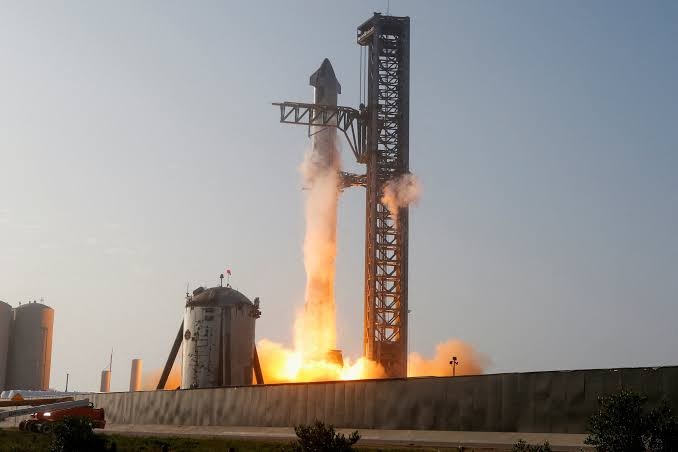

Six flights. One trajectory.
Each milestone pushed reusability further — from surviving orbit at all, to landing upright, to flying the same hardware again. Drag the model on the right to see Starship in 3D right here.

Falcon 1 Reaches Orbit
The first privately developed liquid-fuel rocket to reach Earth orbit — on the fourth attempt, with the company nearly out of money.

Falcon 9 Debuts
A larger, more powerful rocket designed from the start with reusability in mind — the workhorse the fleet still flies today.

First Orbital-Class Booster Landing
A Falcon 9 first stage lands upright after launch on December 21, 2015 — proof that rocket boosters didn't have to be single-use.

Falcon Heavy's First Flight
Three Falcon 9 boosters strapped together — at the time, the most powerful operational rocket in the world.

Crew Dragon Carries Astronauts
The first crewed orbital launch from American soil since the Space Shuttle retired in 2011.

Starship Flight Testing
SpaceX's fully reusable transportation system for Earth orbit, the Moon, Mars, and beyond — flight testing began in 2023.